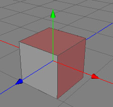
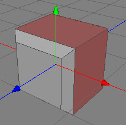
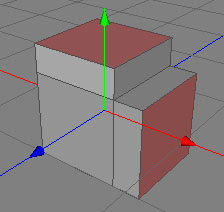

押し出しツール
押し出しツールは利用可能なもっとも基本的なツールです。ポリゴンメッシュの詳細形状を作成するには最適なツールです。下図を見ると押し出しツールで何が出来るかわかると思います。
似たような形状作成は 同位置に複製ツール や 移動変形ツールツールでも可能です。 同位置に複製ツール でのエッジの押し出しは少しずつ作業できるのでほとんどの場合押し出しツールより快適です。
  
押し出したいポリゴンを選択し押し出します。
モード
押し出しツールは編集中のポリゴンにのみ適用できます。 また、 ポリゴンモードでのみ使用できます。

押し出しツールを使用するには、まず 押し出したい ポリゴンを選択してください。その後、マウスのボタンを押しながら左右にマウスを移動します。すると突出方向、またはへこむ方向に面を追加できます。作業が終わったらマウスボタンを放してください。
キー
-
- 無し
プロパティ
- グループを維持: これをチェックすると押し出しツールは選択したポリゴンをグループを維持するよう試みます。従って、選択した近辺のポリゴンとの角度を計算して押し出します。ポリゴン間の角度が押し出し角度 で設定した数値より小さい場合にはポリゴングループを保持します。
- 押し出し角度: 参照してください。 グループを維持.
- クォンタイズ: 0をセットすると滑らかに押しだし距離を移動できます。それ以外の数値をセットするとその数値の間隔で押し出し量が変化します。